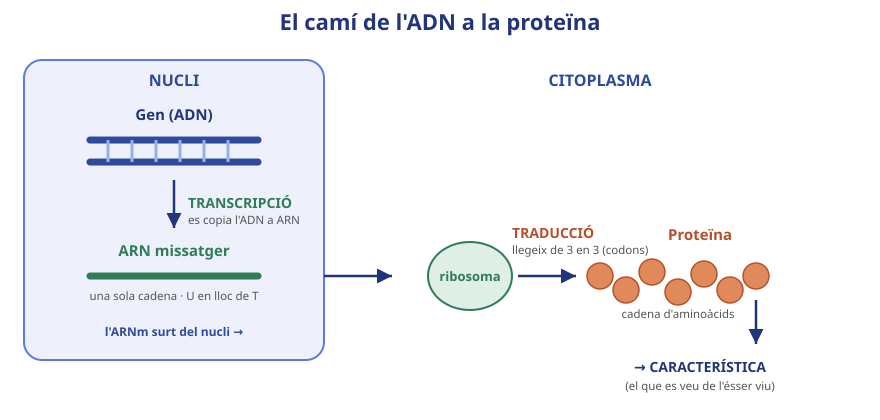
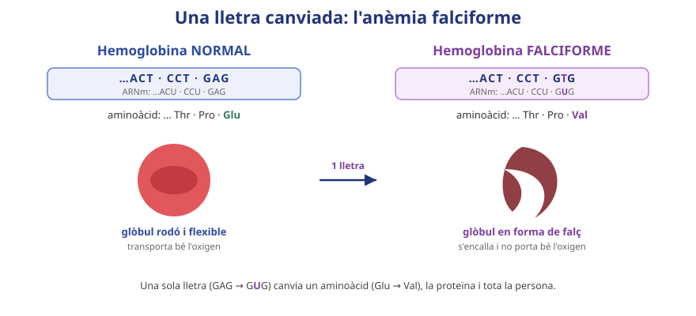

La informació de l’ADN, per a què serveix? Què fabrica la cèl·lula seguint-la?
L’ADN es queda al nucli, però les proteïnes es fabriquen fora. Com creus que el missatge arriba fins a la fàbrica de proteïnes?

Completa el camí i digues on passa cada pas:
GEN (ADN) —[ ]→ ARNm —[ ]→ PROTEÏNA → CARACTERÍSTICA
Recorda: la còpia de l’ADN a ARNm la fa una màquina, l’ARN polimerasa; la proteïna es fabrica al ribosoma.
On passa cada pas? Transcripció: ______________ · Traducció: ______________
Taula de codons de l’ARNm (fragment). Cada codó = 3 lletres = 1 aminoàcid:
GUG → Val
CAC → His
CUG → Leu
ACU → Thr
CCU → Pro
GAG / GAA → Glu
UGA / UAA / UAG → STOP
Glu = glutamat · Val = valina · His = histidina · Met = metionina · Leu = leucina · Thr = treonina · Pro = prolina. Fixa’t que el Glu té DOS codons (GAG i GAA): dos codons poden donar el mateix aminoàcid.
Cadena codificant de l’ADN (còpia-la a ARNm canviant T→U):
ADN: ATG · GTG · CAC · CTG · ACT · CCT · GAG
| Pas | Escriu-ho aquí (7 codons) |
|---|---|
| ARNm (U en lloc de T) | |
| Codons (de 3 en 3) | |
| Aminoàcids (proteïna) |
Amb les teves paraules: què és un codó i què és un anticodó?
Per què diem que la informació és l’ORDRE de les lletres i no les lletres soltes? Explica-ho amb un exemple.

El mateix gen, amb una sola lletra diferent. Tradueix el gen MUTAT i compara’l amb el normal de l’apartat 2:
ADN mutat (codificant): ATG · GTG · CAC · CTG · ACT · CCT · GTG
| Pregunta | Resposta |
|---|---|
| Quin codó de l’ARNm canvia? | |
| Quin aminoàcid hi havia i quin hi va ara? | |
| Quin efecte té sobre el glòbul vermell? |
Explica el camí complet de la mutació (lletra → codó → aminoàcid → proteïna → cèl·lula → persona):
1. Quina diferència hi ha entre transcripció i traducció? (marca)
☐ La transcripció fabrica l'ARNm a partir de l'ADN i la traducció torna a copiar aquest ARNm en ADN nou
☐ La transcripció copia l'ADN a ARNm (al nucli); la traducció fabrica la proteïna llegint l'ARNm (al ribosoma)
☐ Totes dues passen al nucli, però la traducció només es fa quan la cèl·lula està a punt de dividir-se
2. Un ARNm és AUG-GUG-CAC (AUG=Met, GUG=Val, CAC=His). Escriu els aminoàcids i digues què és un codó.
3. A l’anèmia falciforme canvia una sola lletra. Explica, pas a pas, com un canvi tan petit pot fer emmalaltir una persona.